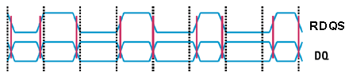
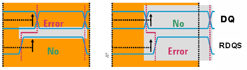

Typical timing problems
A typical timing error on a source sync bus is the common mode drift between data and strobe signals. For GDDR3 devices a critical timing window is described by the tDQSmin and tDQSmax spec values.
GDDR or DDR memory devices operate in source synchronous mode where typically a clock signal DQS (also called "strobe") is transmitted along with its corresponding data signals DQ(s) (see following figure).

GDDR or DDR memory devices feature different strobes (DQS_i). Each of the strobes is used for eight corresponding data signals DQ0_i...DQ7_i (1 byte). For example a GDDR3 memory device features four strobes with 8 data signals per strobe.
A source synchronous failure (caused by a GDDR or DDR memory device) is a "relative timing error" (see following figure).

Example
In a GDDR memory device critical parameters on the source synchronous interface are show in the figure below. The setup time and hold time mentioned in the concept section translate into tDQSQmin and tDQSQmax times. These are the device parameters a test engineer looks for mainly in a GDDR memory device.
The time interval tDQSQmax specifies the time difference between the data clock (RDQS) edge and the last valid data (DQ) edge. The time interval tDQSQmin specifies the time difference between the data clock (RDQS) edge and the edges of the data DQ where the data is no longer valid.
All DQs combined form the data eye, the minimum data valid time (tDV) across all data lines.